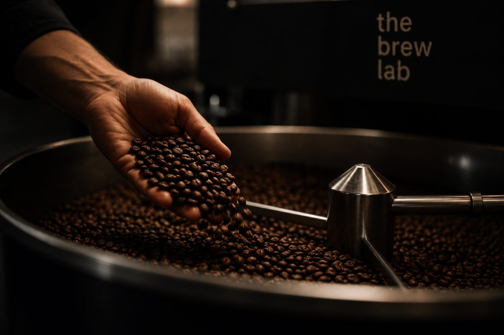

New here.
Serious about the coffee.
The Brew Lab is brand new — no decades-old legend, no hundredth branch. Just a small team obsessing over where the coffee comes from and the food we put beside it. We don't do high-street signs or walk-ins. We live inside a community — and if you're one of ours, you already know where. If you know, you know.

Good coffee is the doorway. People are the room.
We keep the cup honest and the price fair so the habit is easy to keep. Then we do the harder part: making a place where regulars become familiar faces, and familiar faces become a little community that shows up for each other.
When there's time to linger.
Regular get-togethers that bring everyone back together. [Sample listings — replace with real events.]
Build Night
Bring a project, share a table, trade ideas over the last brew of the day.
Cupping & New Drops
Taste the next single origins before they hit the board. Members first.
Quiet Hours
Low lights, lo-fi, no rush. Good for reading, sketching, slow mornings.
You already know where to find us.
No sign out front. No walk-ins. The Brew Lab lives inside its community — if you're part of one, you know exactly where. Not yet? Bring us to yours. [Sample locations — add your real addresses & hours.]
Campus Lab
123 University Walk
Mon–Fri 7a–6p · Sat 8a–4p
[placeholder]
High Street
48 High Street
Daily 7a–5p
[placeholder]
Station Stop
Central Station, East Concourse
Mon–Fri 6:30a–10a
[placeholder]